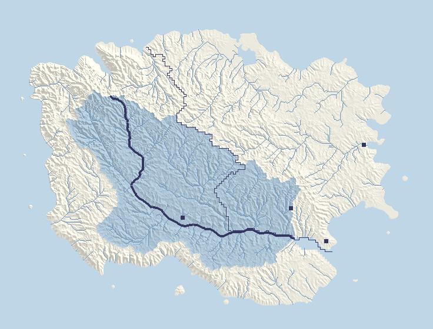

Runmek
Main river of the mainland, through Urvania and along the border to Lumeport
 | |
| Country | Urvania; the border with Bayvarra for about 100 km |
|---|---|
| Length | 471 km |
| Basin | 53,248 km² |
| Source | about 1,511 m |
| Mouth | the sea |
| Tributaries | Bruna, Nevola, Tallow, Castagna, Marrow, Selvana, Canneto, Pampina, Mirtina |
The Runmek is the main river of the mainland, 471 km long, with a basin of 53,248 km², about a third of the mainland. It rises on the volcanic massif of Urvania at about 1,511 m, runs through the rift valley past Ferrano, forms the border with Bayvarra from Forte Euridice down, and reaches the sea by the estuary at Lumeport. Its name is Urvanian and means mother; the Italians and the British kept it.
Course
From the massif the river runs south-east through the rift valley, 15 to 18 km wide, and takes in the Nevola and the Castagna. Just above Ferrano it falls through rapids, from about 124 to 91 m in about 12 km, which end navigation: the barges work below them. At Forte Euridice the Bruna, its largest tributary, joins it; from there to the estuary the river is the border, and the Tallow and the Marrow come in from Bayvarra's plateau.
History
The Urvanians' town, Ruldraz, now Ferrano, grew where the valleys meet, below the rapids. In 1840 the Sardinian corvette Euridice sailed up the river to Ruldraz, and the boundary convention of 1857 made the river the border below the confluence, with free navigation to the sea.
Tributaries
| River | Length | Basin |
|---|---|---|
| Bruna | 240 km | 11,327 km² |
| Nevola | 184 km | 6,323 km² |
| Tallow | 144 km | 5,501 km² |
| Castagna | 146 km | 4,456 km² |
| Marrow | 101 km | 2,096 km² |
| Selvana | 91 km | 1,849 km² |
| Canneto | 71 km | 1,304 km² |
| Pampina | 74 km | 1,281 km² |
| Mirtina | 63 km | 1,073 km² |
On the river
From the source down to the mouth: San Ranieri del Guado.